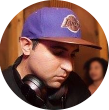

"The Masterclass was an amazing experience to learn and connect with other producers. Serik covers literally everything from the technical and creative aspects of music production, to music business and the mental aspects of being an up and coming producer. It really helped me take that extra step forward towards tightening up my chops and developing the right mindset to succeed in my music.
Serik's guidance was very pivotal in achieving my goals such as hitting #1 on HypeM, and he’s always ready to help out even after the class. He's the man! Highly recommended."
Erich Yeung
"Just comparing my music before and after the Masterclass, I’m convinced it cut YEARS off my learning curve. Honestly, this class is worth way more than the asking price."
Yong-Ywi Cho
"Reworking my processing chain literally made the whole class worth it. You can’t randomly throw around plugins and hope to get a professional sound. Serik’s processing chain has had an incredible impact on finishing off my tunes."
TJ Sarda
"Taking the Hyperbits Masterclass was one of the best things I could’ve done for myself as a producer. It didn’t happen overnight, but Skrillex is playing my music now and this class definitely helped take my production to the next level."
Kirk Cosier
"A lot of experienced producers say ‘There are no rules in music’ and while that may be true, the guidelines from the Masterclass really helped progress my sound. The class definitely played a role in getting multiple Hype Machine #1 records since."
Ian Snow
"Honestly, I was looking for a course that could improve my mixes and wow, these 8 weeks blew my expectations out of the water. All the knowledge, habits, support, and encouragement gained from the class pushed me to make music that can now be played alongside my favorite artists."
Huy Bui
"My goal was to not only expand upon my skillset but to also meet like-minded peers and grow my musical network. Goal accomplished! Blessed to have been part of this amazing group and Serik's relatable approach to teaching."
Mandi Barbieri
"All of my music sounds WAY better. It’s clearer, sharper, and more dynamic, which helped me get a few tracks signed to some solid labels."

Adrian Gutierrez
"After this class my tracks are more powerful AND clean due to proper use of reductive EQ and saturation. After learning those techniques, the improvement in my mixes was almost instant."
Alex Blatt
"This is really the best class I’ve ever taken in music. I’m creating ideas much faster, I’m achieving way cleaner mixes, constructing more interesting grooves and movement, and learning to master on my own will be a huge time and money saver."
Chris Fezza
"Songs used to take me several weeks to complete. Now I’m finishing arrangements in 1-2 days, and the tracks sound much more full and warm. My old stuff sounded very thin and brittle before I took this class."
Michael Regina
"I learned a TON of stuff. The parts about saturation and reductive EQ alone changed my entire workflow. Seeing Serik’s workflow and approach to mixing and mastering was absolutely invaluable."
Bobby Hilzen
"Three game changers: I learned how to make my builds extremely effective, I learned how to actually use tons of powerful plugins, and I learned how to make my workflow smoother which has lead to banging out tracks with much more regularity."
Sep Eshragh
"It only took a few weeks but wow - my mixes sound way cleaner, brighter, louder, and more professional. The Masterclass is perfect for anyone who wants to take their electronic dance music production skills to the next level, but I would recommend at least a year of production under your belt before you start the course so you don't get too overwhelmed."
Dawson Choong
"I'm now able to confidently make club-ready music without hesitation. The biggest thing though, is that I can strategically lay down sounds, compositions, processing chains and know exactly WHY I'm doing those things. I'm now able to tweak and tailor my music to get it exactly where I want - which is what I was looking for coming into this class."
Joel Freckelton
"Here's the thing - I've made over 100 songs in the past year, and the song I showed Serik in last week of the class was by far the best thing I've created to date - and that is because of what I learned in the class. I'd also like to mention that you don't need to be making 'EDM' to get value out of this class - just anything electronic. And btw - with 3 live sessions every week, there was more than enough time to ask every single question that came to mind. "
Ryan Krysiak
"Because of this class, I was able to make my music sound literally 3x bigger and fuller. It's crazy how much proper mixing tools like saturation can impact your mix once you know what you're doing. This class is perfect for anyone trying to get to the highest, professional tier of music production quality. "
Jack Leech
"The reverb information was unbelievably valuable. I've seen a lot of videos on production and I've never heard reverbs explained that well. Hyperbits also made sense of mastering for me, which is so valuable and something that I always struggled with. If you're motivated and someone who considers themselves a serious producer - this is the perfect class."
Jarel Hill
"CLEANER MIX DOWNS! Lemme tell you - I can't believe that there was such an improvement. Like I've attended some pretty well-known big electronic music schools, but what i got out of it was a fraction of what i got out of the Masterclass. Hyperbits helped me grow as an artists and gave me so much confidence in my mixes now.😃"
Raphael Bussy
"First, I got a very positive shift in mindset from this class. Week 1 was a fantastic overview of what it takes to be a successful producer and how to approach your craft from both a mental and technical perspective. The remaining weeks (2-8) were very comprehensive and helped me in implementing structure and organization to my productions, not to mention all of the super-valuable mixing / mastering wisdom.
I felt like nothing was really "hidden" or "left out" in terms of material covered. Discussions on work ethic and marketing were a great addition, and the office hours plus the private FB group were also very engaging."
Dom Dobransky
"The song I released during class had greatly increased clarity and cohesion, and was also easily made commercially loud through mastering. For the first time since I had started production, every mixing decision I made had a purpose that I could clearly communicate to myself and others. I also got a much better sense of how to market myself."
Ezra Brownstein
"So many results, I'll just list them:
Clearer mixes
Confidence in approaching my mixdowns and mastering sessions
Strong understanding of all necessary tools to create a track (effects, gain structure, signal flow - which was huge btw)
Dispelled the illusion of needing someone else to master my tracks
Reverse engineering for sound design"
Alan Ngu
"The results were immediate after each week since Serik had as do "homework". By the end of the 8 week session, I had already finished a track and within that track i applied every thing i learned from class and got a LOUD and CLEAN track.
I learned a lot of new and great things. First of all a lot of technical tipps & tricks. And on the other hand a lot of mental things and how to work more consistent and getting a better workflow. Already after the first session I got some results because I wanted to start immediately producing my next track and implementing the learned stuff."
Niels van Veen
"Now that the course is over I look back at my older music and it's just insane how much better my stuff is sounding. I really think the most important result I got was learning advanced processing chains and techniques that give my music that polished feel - and ultimately, a more polished sound. The Masterclass is perfect for any producer trying to get their music to the next level."
Bryce Nickerson
"I now understand what distinguishes an amateur sound from a pro sound - which is just priceless and something, you don't learn in school. I feel prepared to kick some ass now after only the first few sessions. All my new music immediately sounds "better" and way less digital than before."